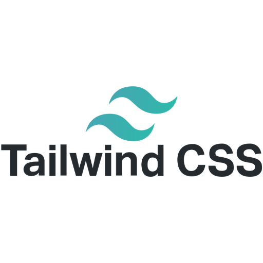
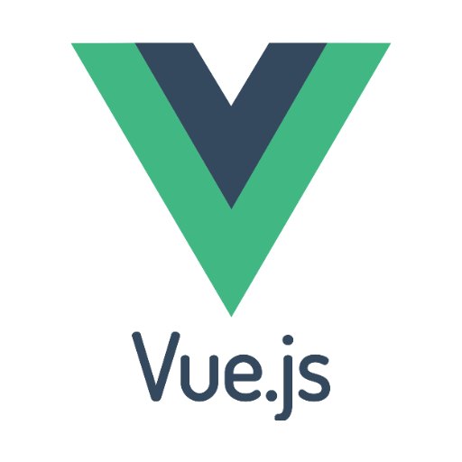
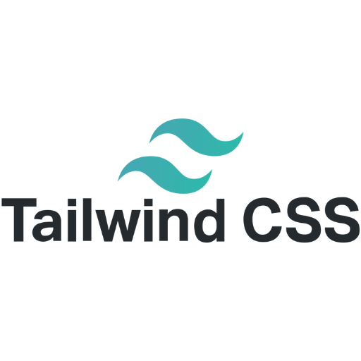
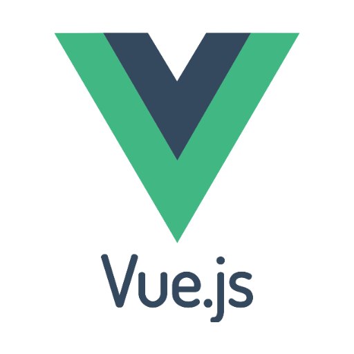
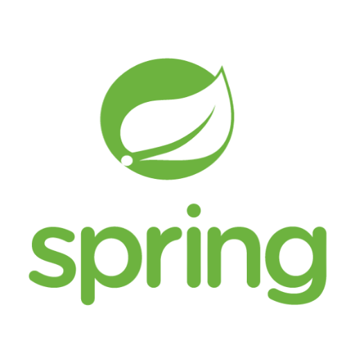
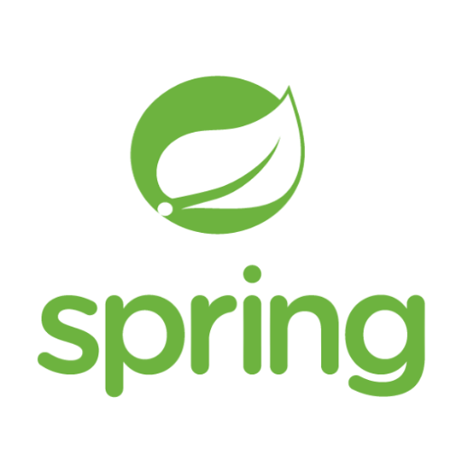

Vitaj na mojej osobnej osobnostnej stránke.
Som developer so zameraním na tvorbu responzívneho, čoskoro reaktívneho webu, pomocou vlastného kódu.
Žiaden WordPress. Iba ja, CSS a ChatGPT 😉
Som developer so zameraním na tvorbu responzívneho, čoskoro reaktívneho webu, pomocou vlastného kódu.
Žiaden WordPress. Iba ja, CSS a ChatGPT 😉
Krátka story..
K programovaniu som sa dostal cez brata, ktorý mi odporučil knihu "Java bez predchádzajúcich skúseností". Prvú príležitosť podieľať sa na vývoji aplikácií som získal v agilnom tíme, ktorý vyvíjal SCRUM metodikou MS PowerApps aplikácie. Momentálne som samouk na voľnej nohe. Pre klienta vyrábam e-shop s viac ako 20 000 produktami, postavený na platforme Shopify. Mám ale rád veci pod kontrolou a preto sa vo voľnom čase učím jazyk Rails. S použitím SQLite databázy by som chcel Ruby on Rails využiť pre vlastné riešenie eshopu. Všetko bude postavené na MVC architektúre s ktorou som sa už stretol v kurze o Jave a Springu. Väčšinu vedomostí čerpám z kurzov (vďaka Ti, Yablko a Jaro Beňo).


 



 


Všetko ale pekne postupne.
Do väčšiny z vyššie spomenutých technológií som už mal možnosť nahliadnuť. Nechcem ale tvrdiť, že ich ovládam. Ako budú vedomosti pribúdať, aj túto stránku a jej kód budem brúsiť, leštiť, farbičkovať. Jej zámerom je ukázať môj aktuálny level znalostí a kreativitu. Ak si sa dostal/a až sem, môj výtvor Ťa zrejme zaujal aspoň trošku a ja mám o trošku menej pocit, že táto stránka patrí aj somnou do koša. Patrí ti odomňa veľká vďaka a vážim si tvoju návštevu ❤️.